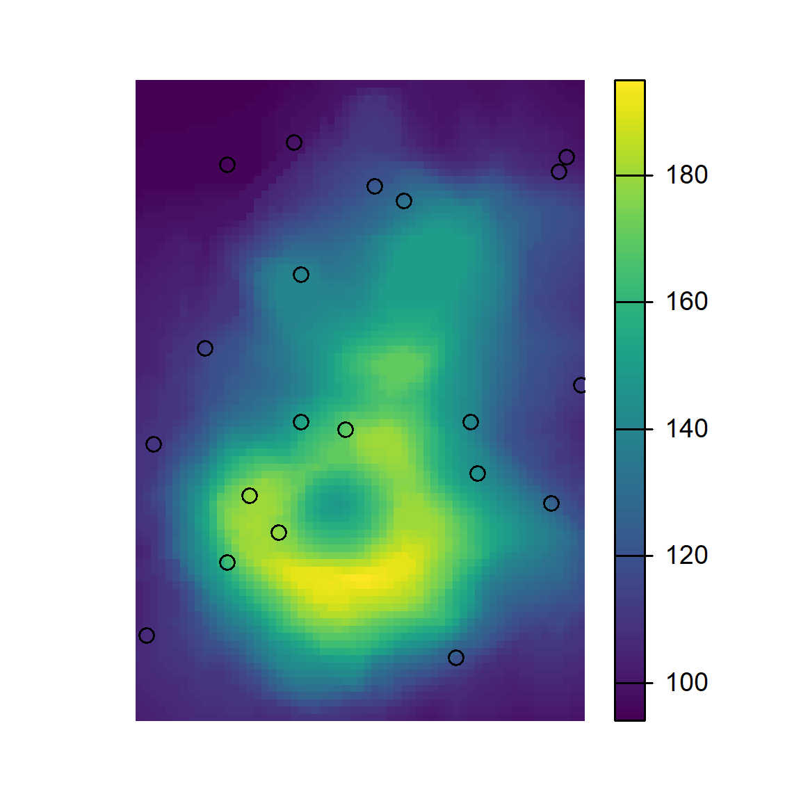
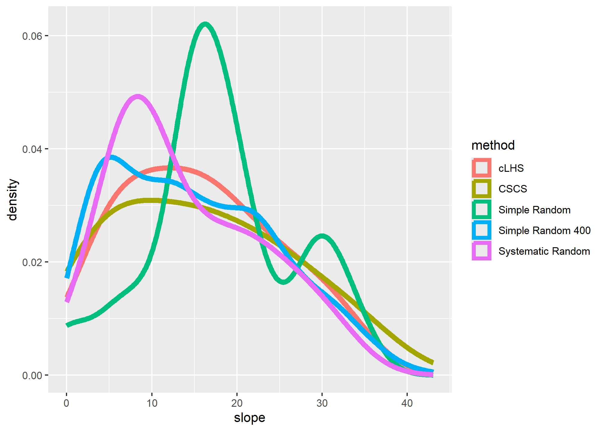

Chapter 5 Sampling

5.1 Introduction
Sampling is a fundamental part of statistics. Samples are collected to achieve an understanding of a population because it is typically not feasible to observe all members of the population. The goal is to collect samples that provide an accurate representation of the population. Constraints on time and money dictate that the sampling effort must be efficient. More samples are needed to characterize the nature of highly variable populations than less variable populations.
Define your purpose: What are you investigating? Examples include soil properties, soil classes, and plant productivity.
How many samples are needed?
The question of how many samples are required is complex. As per usual, the answer is ‘it depends’. For example, it depends on the type of analysis (e.g. non-spatial vs spatial) and properties of the data (e.g. continuous vs categorical). In all cases it requires an understanding/assumptions of the underlying population. If a scientist can estimate the several population variables, formulas exist to estimate the required number of samples. The following are a list of methods for estimating sample size:
- Standard error
- Confidence interval
- Power analysis (hypothesis testing)
- Distance/time
- Prediction error
- Rules of thumb
- NSSH 627.8
The first 3 methods use formulas for their corresponding statistics to solve for the sample size, each results in progressively higher sample size requirements. The PracTools R package (Valliant and Dever 2022) offers several functions for the 1st and 2nd methods. The pwr (Champely 2020) and WebPower (Zhang and Mai 2021) R packages offer several functions for the 3rd method, based on a variety of statistical models. Gelman, Hill, and Vehtari (2020) provides a nice graphical illustration of the variables involved with these methods.
5.1.1 DSM classes
A variation of the 2nd method is described by Congalton and Green (2019) for use with categorical data, which is applicable to digital soil mapping.
nMultinomial <- function(k = NULL, p = 0.5, error = 0.1, alpha = 0.05) {
# k = number of classes
# p = proportion of the largest class
# error = margin of error
# alpha = confidence level probability
ceiling(qchisq(1 - alpha / k, 1) * p * (1 - p) / error^2)
}
nMultinomial(k = c(10, 20, 30))## [1] 197 229 248nMultinomial(k = 10, error = c(0.05, 0.1, 0.2))## [1] 788 197 50nMultinomial(k = 10, alpha = c(0.05, 0.1, 0.2))## [1] 197 166 1365.1.2 Rules of thumb
Some rules of thumb for regression models are as follows:
- Use > 10 observations (n) per predictor (m) (Kutner et al. (2005)).
- Use > 20 n per m and n > 104 + m to test regression coefficients (Rossiter 2017; Franklin and Miller 2009).
- Never use n < 5*m (Rossiter 2017).
5.1.3 NSSH 627.8
Documentation requirement for the following data elements are specified in the section 627.8 of the National Soil Survey Handbook (NSSH).
# NSSH 627.8 Documentation
# soil series
data.frame(
level = "soil series",
n = c(5, 10),
acres = c(2000, 20000)
)## level n acres
## 1 soil series 5 2000
## 2 soil series 10 20000# components
data.frame(
level = "components",
n = 1,
acres = 3000
)## level n acres
## 1 components 1 3000# map units
data.frame(
level = "map unit",
n = cumsum(c(30, rep(10, 3))),
acres = c(2000, seq(from = 4000, by = 4000, length.out = 3))
)## level n acres
## 1 map unit 30 2000
## 2 map unit 40 4000
## 3 map unit 50 8000
## 4 map unit 60 120005.2 Sampling Strategies
library(sf)
library(ggplot2)
# set the seed for the random number generator
set.seed(4)
# Create a sixteen square polygon
bb <- st_make_grid(st_bbox(c(xmin = 0, xmax = 4, ymin = 0, ymax = 4)), n = 4)
grd <- st_as_sf(bb)
grd$ID <- 1:length(bb)5.2.1 Simple Random
In simple random sampling, all samples within the region have an equal chance of being selected. A simple random selection of points can be made using either the st_sample() function within the sf R package or the Create Random Points tool in ArcGIS.
Advantages
- Simple
- Unbiased (equal probability of inclusion)
- Requires little prior knowledge of the population
- Howell et al. (2004) - produced a “much more sensitive, more accurate, and greater range of estimated values” than the models from the subjective samples
Disadvantages
- Inefficient (requires large numbers)
- Lower accuracy
- Higher cost
- Samples may not be representative of the feature attribute(s)
- Uneven spatial distribution (e.g. clustered)
# Generate simple random sample
test <- st_sample(grd, size = 16, type = "random")
ggplot() +
geom_sf(data = grd) +
geom_sf(data = test) +
ggtitle("Simple")
5.2.2 Systematic
In systematic sampling, a sample is taken according to a regularized pattern. This approach ensures even spatial coverage. Patterns may be rectilinear, triangular, or hexagonal. This sampling strategy can be inaccurate if the variation in the population doesn’t coincide with the regular pattern (e.g., if the population exhibits periodicity).
Advantages
- Simple
- Precise estimates
- Even spatial coverage
- Greater efficiency
Disadvantages
- Biased estimates (particularly sampling variance)
- May miss individuals that don’t coincide with the sampling interval
- If so, the density needs to be increased
- Limited utility for areas larger than a single field
- Grid may not optimally fit irregular shapes
# Generate systematic random sample
test <- st_sample(grd, size = 16, type = "regular")
ggplot() +
geom_sf(data = grd) +
geom_sf(data = test) +
ggtitle("Systematic")
5.2.3 Spatial Coverage Sampling
# spcosa ----
library(spcosa)
grd2 <- st_crs(grd, NA)
grd_sp <- as(grd, "Spatial")
strata <- stratify(grd_sp, nStrata = 16)
pts <- spsample(strata)
plot(strata, pts) +
ggtitle("Spatial Coverage")5.2.4 Stratified Random
In stratified random sampling, the sampling region is spatially subset into different strata, and random sampling is applied to each strata. If prior information is available about the study area, it can be used to develop the strata. Strata may be sampled equally or in proportion to area; however, if the target of interest is rare in the population, it may be preferable to sample the strata equally Franklin and Miller (2009)].
Advantages
- More efficient than simple-random
- Higher accuracy
- Lower cost
- Sampling can be sized relative to proportion or variance
Disadvantages
- Require pre-existing knowledge of the population (which may be flawed)
- If sampling is uneven, weights need to be known
- May need to construct the strata manually
grd2 <- st_cast(grd, "MULTIPOLYGON")
st_crs(grd2) <- 5070
test <- st_sample(grd2, size = 16, type = "random", by_polygon = TRUE)
ggplot() +
geom_sf(data = grd) +
geom_sf(data = test) +
ggtitle("Stratified")
Note that the spsample() function only stratifies the points spatially. Other more sophisticated designs can be implemented using the spsurvey, sharpshootR, or clhs packages.
5.2.5 Multistage Stratified Random
In multistage random sampling, the region is separated into different subsets that are randomly selected (i.e., first stage), and then the selected subsets are randomly sampled (i.e., second stage). This is similar to stratified random sampling, except that with stratified random sampling each strata is sampled.
Advantages
- Most efficient
- Lower cost
- Sampling can be sized relative to proportion or variance
Disadvantages
- Less precise
- Uneven spatial distribution (e.g. clustered)
- Require pre-existing knowledge of the population (which may be flawed)
- If sampling is uneven, weights need to be known
- May need to construct the strata manually
# Select 8 samples from each square
idx <- sample(1:nrow(grd), size = 2, replace = FALSE)
grd_sub <- grd[idx, ]
test <- sapply(1:2, function(i) {
st_coordinates(st_sample(grd_sub[i, ], size = 8, type = "random"))
})
test <- st_as_sf(as.data.frame(test), coords = 1:2)
ggplot() +
geom_sf(data = grd) +
geom_sf(data = test) +
ggtitle("Two-stage")
5.2.6 Conditioned Latin Hypercube (cLHS)
Conditioned Latin hypercube sampling is a stratified random sampling technique to obtain representative samples from feature (attribute) space (Minasny and McBratney 2006).
Advantages
- Maximumly stratifies the predictors
- Automated sample selection
- Incorporates cost constraints
- Can incorporate legacy points
- Easily scales to multiple GIS layers
Disadvantages
- Not ideal for map validation (non – probability sample)
- Not ideal for developing map unit concepts (puts points in weird landscape positions)
- Difficult to find alternatives for non-accessible points
- Inefficient with large GIS layers
For example, assume you have prior knowledge of a study area and have the time and resources to collect 120 points. You also know the following variables (strata), which are represented as coregistered raster datasets, to be of importance to the soil property or class being investigated:
- Normalized Difference Vegetation Index (NDVI),
- Topographic Wetness Index (a.k.a. Wetness Index, compound topographic index),
- Solar insolation (potential incoming solar radiation), and
- Relative elevation (a.k.a. relative position, normalized slope height).
The cLHS procedure iteratively selects samples from the strata variables such that they replicate the range of values from each stratum. Without a technique such as cLHS, obtaining a sample that is representative of the feature space becomes increasingly difficult as the number of variables (strata) increases.
To perform cLHS using R, you can use the clhs package (Roudier 2011).
library(clhs)
library(raster)
# import volcano DEM, details at http://geomorphometry.org/content/volcano-maungawhau
data(volcano)
volcano_r <- raster(as.matrix(volcano[87:1, 61:1]),
crs = CRS("+init=epsg:27200"),
xmn = 2667405, xmx = 2667405 + 61 * 10,
ymn = 6478705, ymx = 6478705 + 87 * 10)
names(volcano_r) <- "elev"
# calculate slope from the DEM
slope_r <- terrain(volcano_r, opt = "slope", unit = "degrees")
# Stack Elevation and Slope
rs <- stack(volcano_r, slope_r)
# generate cLHS design
cs <- clhs(rs, size = 20, progress = FALSE, simple = FALSE)
# Plot cLHS Samples
par(mar=c(1,1,1,4))
plot(volcano_r, axes=FALSE)
points(cs$sampled_data)
# Summary of clhs object
summary(cs$sampled_data)$data## elev slope
## Min. : 96.0 Min. : 0.000
## 1st Qu.:109.5 1st Qu.: 7.023
## Median :126.0 Median :13.832
## Mean :130.8 Mean :14.718
## 3rd Qu.:146.8 3rd Qu.:21.348
## Max. :181.0 Max. :37.351
## NA's :1# Summary of raster objects
cbind(summary(volcano_r), summary(slope_r))## elev slope
## Min. 94 0.000000
## 1st Qu. 108 7.054131
## Median 124 14.103463
## 3rd Qu. 150 21.665758
## Max. 195 43.032469
## NA's 0 292.000000Although the above example works well on our small volcano dataset, the clhs package is inefficient if you are working with large raster datasets. To overcome this limitation, you can first take a large random sample and then subsample it using cLHS.
sub_s <- sampleRandom(volcano_r, size = 200, sp = TRUE) # random sample function from the raster package
s <- clhs(sub_s, size = 20, progress = FALSE, simple = FALSE)5.3 Evaluating a Sampling Strategy
To gauge the representativeness of a sampling strategy, you can compare the results it produces to the results for other variables you think might coincide with the soil properties or classes of interest (Hengl 2009). Examples include slope gradient, slope aspect, and vegetative cover. These other variables may be used to stratify the sampling design or to assess the representativeness of our existing samples (e.g., NASIS pedons).
The simple example below demonstrates how to compare several sampling strategies by evaluating how well they replicate the distribution of elevation.
# set seed
set.seed(1234)
# create a polygon from the spatial extent of the volcano dataset
test <- st_make_grid(extent(volcano_r), n = 1)
# take a large random sample
sr400 <- st_sample(test, size = 400, type = "random")
# take a small random sample
sr <- st_sample(test, size = 20, type = "random")
sr2 <- sampleRandom(volcano_r, size = 20)
# take a small systematic random sample
sys <- st_sample(test, size = 20, type = "regular")
sys2 <- sampleRegular(volcano_r, size = 20)
# take a cLHS sample
cs <- clhs(rs, size = 20, progress = FALSE, simple = FALSE)
# Combind and Extract Samples
s <- rbind(data.frame(method = "Simple Random 400",
extract(rs, st_coordinates(sr400))
),
data.frame(method = "Simple Random",
extract(rs, st_coordinates(sr))
),
data.frame(method = "Systematic Random",
extract(rs, st_coordinates(sys))
),
data.frame(method = "cLHS",
slot(cs$sampled_data, 'data')
)
)
# Summarize the sample values
aggregate(slope ~ method, data = s, function(x) round(summary(x)))## method slope.Min. slope.1st Qu. slope.Median slope.Mean slope.3rd Qu. slope.Max.
## 1 cLHS 1 8 14 15 21 39
## 2 Simple Random 0 7 17 15 23 28
## 3 Simple Random 400 0 6 14 15 21 37
## 4 Systematic Random 0 4 12 13 18 30# Plot overlapping density plots to compare the distributions between the large and small samples
ggplot(s, aes(x = slope, col = method)) +
geom_density(cex = 2)
volcano_r2 <- as(volcano_r, "SpatialPixelsDataFrame")
# plot the spatial locations
par(mfrow = c(1, 3), mar=c(1,2,4,5))
plot(volcano_r, main = "Simple random", cex.main = 2, axes=FALSE)
points(st_coordinates(sr), pch = 3, cex = 1.2)
plot(volcano_r, main = "Systematic random", cex.main = 2, axes=FALSE)
points(st_coordinates(sys), pch = 3, cex = 1.2)
plot(volcano_r, main = "cLHS", cex.main = 2, axes=FALSE)
points(cs$sampled_data, pch = 3, cex = 1.2)
The overlapping density plots above illustrate the differences between large and small sets of samples using several sampling designs.
The cLHS approach best duplicates the distribution of elevation (because elevation is explicitly used in the stratification process). The contrast is less severe in the summary metrics, but again cLHS more closely resembles the larger sample. Other comparisons are possible using the approaches in the following chapters.
5.3.1 Exercise: Design a Sampling Strategy
- Load the “tahoe_lidar_highesthit.tif” dataset in the
gdalUtilitiespackage (i.e.tahoe <- raster::raster(system.file("extdata/tahoe.tif", package = "gdalUtilities"))) or use your own data set. - Compare two or more sampling approaches and evaluate how representative they are.
- Show your work and submit the results to your mentor.
5.4 Additional Reading (Sampling)
Brungard, C., & Johanson, J. (2015). The gate’s locked! I can’t get to the exact sampling spot … can I sample nearby? Pedometron(37), 8-9. http://www.pedometrics.org/Pedometron/Pedometron37.pdf
Brus, D.J. and J.J. de Gruijter. “Random sampling or geostatistical modelling? Choosing between design-based and model-based sampling strategies for soil (with discussion).” Geoderma. Vol. 80. 1. Elsevier, 1997. 1-44. https://www.sciencedirect.com/science/article/pii/S0016706197000724
Brus, Dick J. Spatial Sampling with R. First edition, CRC Press, 2022, https://github.com/DickBrus/SpatialSamplingwithR.
de Gruijter, J., D.J. Brus, M.F.P. Bierkens, and M. Knotters. 2006. Sampling for natural resource monitoring: Springer. http://www.springer.com/us/book/9783540224860.
Viscarra Rossel, R.A., et al. “Baseline estimates of soil organic carbon by proximal sensing: Comparing design-based, model-assisted and model-based inference.” Geoderma 265 (2016): 152-163. https://www.sciencedirect.com/science/article/pii/S0016706115301312